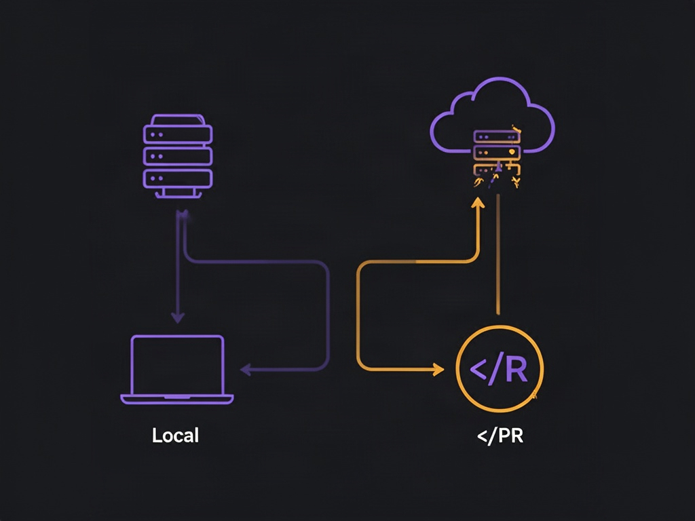
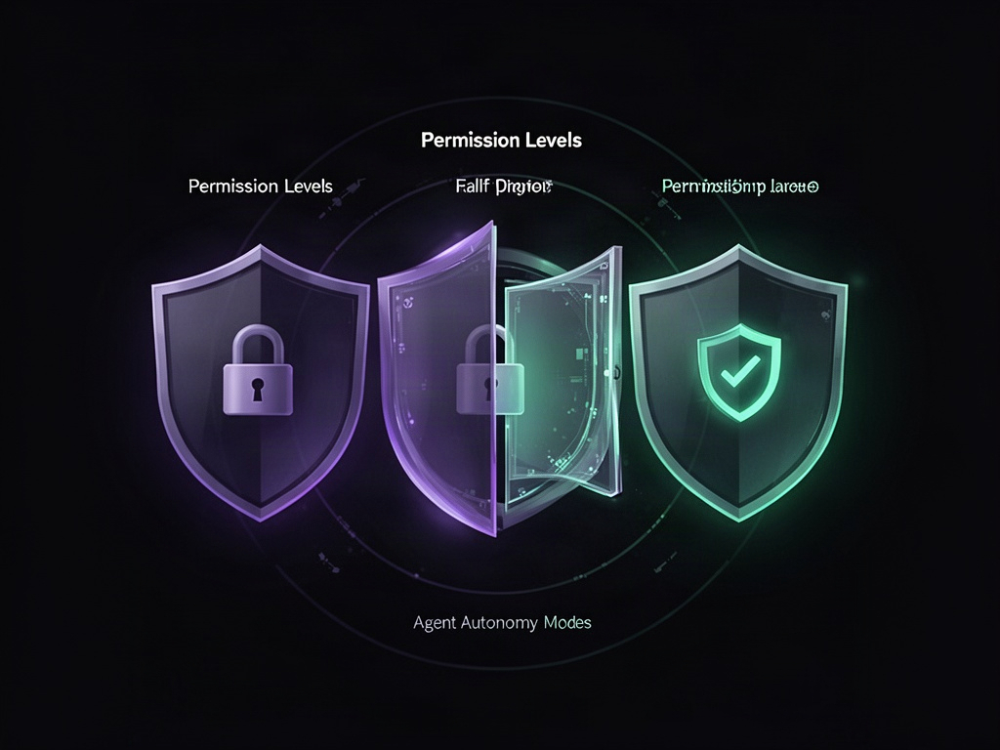

Você fecha o notebook, sai pra almoçar, e volta com um pull request pronto. Não é ficção — é o pitch de uma categoria de ferramenta que ainda confunde muita gente: agentes de codificação que rodam fora da sua máquina, num ambiente cloud completo, com acesso a browser, deploy e GitHub.
A pergunta que importa não é "isso existe?" — já existe. É: onde termina o agente local (tipo Claude Code, Cursor) e começa o agente cloud, e quando faz sentido usar cada um?

Duas categorias, não uma
Existe uma confusão comum: tratar "agente de codificação" como uma coisa só. Na prática, hoje são duas arquiteturas bem diferentes:
- Local / terminal — roda na sua máquina, lê seus arquivos locais, você escolhe o modelo, e você acompanha em tempo real. Claude Code, Cursor CLI e o Devin Terminal (da Cognition) entram nessa categoria.
- Cloud / autônomo — roda numa VM isolada, sem depender do seu laptop ligado. Recebe uma tarefa, navega na web se precisar, roda comandos, faz deploy, e devolve um PR pronto. Devin Cloud é o exemplo mais maduro dessa categoria hoje.
E tem uma terceira peça que quase ninguém fala: revisão automatizada de PR — uma IA que entra direto no seu fluxo do GitHub e comenta/aprova mudanças antes de um humano olhar. É o que fecha o ciclo: agente escreve, agente revisa, humano decide.

O modo de operação muda tudo
A parte mais subestimada de qualquer agente de terminal é o nível de autonomia que você concede. A maioria dessas ferramentas tem 3 modos equivalentes:
| Modo | Comportamento | Quando usar |
|---|---|---|
| Normal | Pede permissão pra qualquer ação além de leitura | Você não confia ainda no agente nesse repo |
| Accept edits | Edita arquivos sozinho, mas pede permissão pra rodar comando ou deletar algo | Refactor/feature normal, você quer supervisionar side effects |
| Bypass ("YOLO") | Faz tudo sem perguntar | Sandbox isolado, ou tarefa de baixo risco que você já validou várias vezes |
O ponto prático: comece sempre em accept edits. Bypass parece produtivo até o agente decidir "otimizar" algo que você não pediu.
Sessões são amnésicas — trate assim
Toda ferramenta desse tipo compartilha uma limitação estrutural: fechar a sessão apaga o contexto. Você sai, volta uma hora depois, reabre o terminal, e o agente não lembra de nada — nem os arquivos que você referenciou, nem a decisão que vocês tomaram juntos. Duas implicações práticas:
- Sessões novas performam melhor. Contexto que enche demais faz o modelo alucinar mais perto do fim — é literalmente o padrão de degradação que qualquer usuário pesado de LLM já sentiu.
- Se você precisa de continuidade real entre sessões, a solução não é "lembrar manualmente" — é externalizar o estado num arquivo (tipo um
AGENTS.mdou notas de sessão) que você recarrega no começo da próxima.
Troca de modelo não é cosmética
Um detalhe que separa uso amador de uso sério: o modelo default raramente é o certo pra tudo. Ferramentas como Devin já vêm com modelo próprio de código (algo como um "SWE" fine-tunado especificamente pra tarefas de engenharia) como padrão, mas permitem trocar pra modelos de fronteira (Opus, por exemplo) quando a tarefa exige raciocínio mais profundo. Regra prática: modelo mais barato/rápido pra CRUD e refactor mecânico; modelo mais caro/capaz pra arquitetura, debugging difícil, ou qualquer coisa que você só vai revisar uma vez.
Referenciar arquivo importa mais do que parece
A diferença entre um agente que "acerta na primeira" e um que fica em loop de correção geralmente não é o prompt — é a precisão da referência. Usar @arquivo pra apontar exatamente o que deve mudar, em vez de descrever em texto livre, reduz drasticamente ambiguidade. É o mesmo princípio por trás de context engineering: menos "adivinha o que eu quero", mais "aqui está exatamente o escopo".
O que muda quando você sobe pra cloud
A vantagem real do agente cloud não é "mais inteligente" — é desacoplamento de máquina. Isso destrava um padrão de trabalho que agente local não consegue:
- Playbooks — tarefas recorrentes viram templates reutilizáveis (tipo "sempre que eu pedir X, siga esses passos").
- Sessões agendadas — dispara uma tarefa às 3h da manhã, acorda com o PR pronto.
- Integrações com Slack e ferramentas de tracking — o time abre uma tarefa numa ferramenta de gestão, o agente pega sozinho, entrega PR, e devolve status pro canal.
- Revisão automatizada de PR — antes de um humano gastar tempo, uma primeira passada de IA já filtra o óbvio.
Isso é o que separa "IA que me ajuda a codar" de "IA que participa do pipeline de entrega" — a segunda categoria é onde o ROI real aparece pra times, não só pra indivíduos.
Quando NÃO vale a pena
Vale nomear o óbvio que costuma ficar de fora: agente cloud autônomo tem custo de setup (conectar GitHub, configurar permissões, aprender os modos) e não substitui supervisão em tarefas de alto risco — migração de banco, mudança de auth, qualquer coisa que um bug silencioso custa caro. A automação total (bypass mode, sessão agendada sem review) é pra tarefa que você já testou manualmente dezenas de vezes. Não é o primeiro lugar pra confiar cegamente.
O framework de decisão
| Cenário | Ferramenta |
|---|---|
| Você está codando ativamente, quer ver cada mudança | Agente local (terminal/IDE) |
| Tarefa bem definida, pode rodar sem supervisão | Agente cloud, modo accept edits |
| Tarefa recorrente e repetitiva | Playbook + sessão agendada |
| Antes de merge, quer uma primeira triagem | Revisão automatizada de PR |
| Migração crítica, mudança de auth, dado sensível | Nenhum agente sem review humano linha a linha |
A categoria de agente cloud ainda é nova o bastante pra maioria dos devs nem ter testado. Mas o padrão de arquitetura — local pra iteração rápida, cloud pra escala e automação, revisão automatizada como rede de segurança — é o que vai virar padrão de indústria nos próximos anos. Vale entender agora, antes que vire tabela stakes.